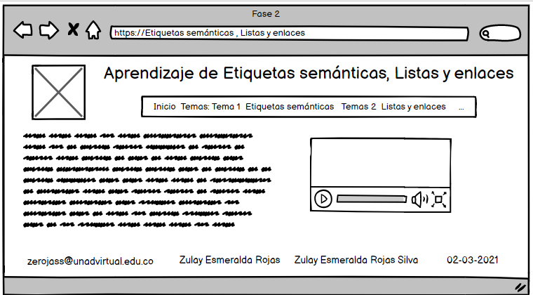

¿Que son las Etiquetas semánticas?
Ayudan a definir la estructura del documento y permiten que las páginas web sean mejor registradas por los buscadores
Por decirlo de otra forma, estamos ante etiquetas que indican qué es el contenido que contienen, en lugar de cómo se
debe formatear al mostrar el documento HTML en un cliente web.
Podemos ver que en la etiqueta STRONG ¿Qué nos indica? Que un texto debe resaltarse con mayor fuerza con respecto a otros textos
que no sean "strong", parecido a lo que nos indica la etiqueta B, que todavía es más concreta, al especificar que un texto
debe ser colocado en negrita. Pensemos ahora en una etiqueta DIV, o P. La primera es una división y P es un párrafo.
Todo esto no son más que maneras de decirle al navegador cómo debe formatear una página, qué debe separar en un texto,
en una división normal, o en un párrafo
Listas y enlaces
Listas HTML
Las listas en HTML nos permite crear conjuntos de elementos en forma de lista dentro de una página web, todos los cuales irán precedidos,
generalmente, por un guión o número.
Existen 3 tipos de listas.
Listas ordenadas:son aquellas que nos muestran los elementos de la lista en orden. Para representar el orden tendremos
los elementos numerados. Es decir, cada uno de los elementos irá precedido de un número o letra que establezca su orden.
Las listas en HTML ordenadas se representan mediante el elemento OL.
Listas desordenadas: Son delimitadas por las etiquetas UL y su cierre (unordered list). Cada uno de los elementos
de la lista es citado por medio de una etiqueta LI (La LI tiene su cierre, aunque si no lo colocas el navegador al ver el siguiente
LI interpretará que estás cerrando el anterior)
Listas de definiciones: Las listas de definición sirven para hacer un conjunto de elementos con pares concepto-descripción.
Es decir, se especificarán varios términos por su nombre y se escribirá una definición para cada uno. Cada elemento es presentado junto con su
definición, uno detrás de otro.
Enlaces HTML
Mediante los enlaces en HTML podemos comunicar una página con otra. De esta forma, enlazando documentos HTML podemos acabar tejiendo
lo que es Internet.
Para crear un enlace en HTML utilizamos el elemento a:
-a- Contenido del enlace -/a-)
Referencias en normas APPA
Celaya Luna, A. (2014). Creación de páginas web: HTML 5 (pág. 1 a 60). Recuperado de https://elibro-net.bibliotecavirtual.unad.edu.co/es/ereader/unad/56045
